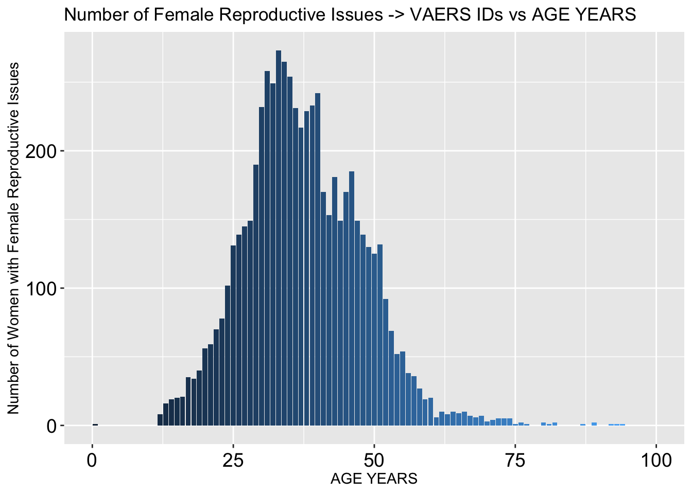
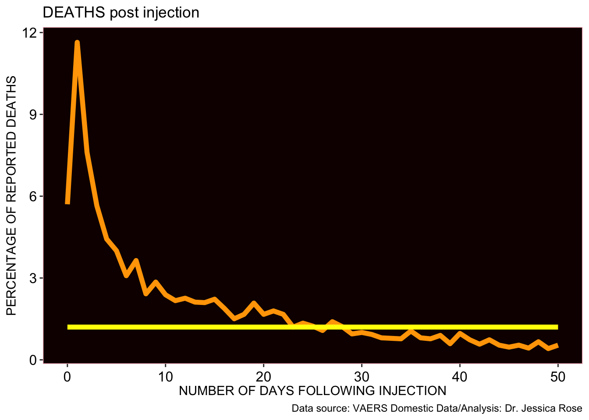

This is an R Markdown sheet generated from the VAERS data. I included some code but for the most part, only figures are shown. I decided to show figures pertaining to Death, Spontaneous abortions, Breakthrough COVID-19 infections and Cardiovascular, Neurological and Immunological adverse events.
I start by coalescing the .csv files downloaded from the VAERS website: https://vaers.hhs.gov/data/datasets.html
## [1] 368162## # A tibble: 3 x 3
## # Groups: SEX [3]
## SEX n PERC_FEMALE
## <chr> <int> <dbl>
## 1 F 261969 71.2
## 2 M 100467 27.3
## 3 U 5726 1.56## [1] 368162ACTUAL REPORTED SEVERE ADVERSE EVENTS (SAE) COMPARED TO VAERS STANDARD (15%) - IT IS STILL CONSISTENTLY HIGHER AND PEAKED AT 57%
## [1] 66242## [1] 39703## [1] 131268DISTRIBUTION OF ALL DATA BY AGE GROUP - THE MAJORITY OF INDIVIDUALS ARE BETWEEN THE AGES OF 30 AND 70
 NUMBER OF SPONTANEOUS ABORTIONS
NUMBER OF SPONTANEOUS ABORTIONS
## [1] 509DISTRIBUTION OF SPONTANEOUS ABORTIONS - THIS SUBSET IS GROWING WEEKLY

THE PLOTS SHOWING OBSERVED VERSUS EXPECTED TRAJECTORIES SHOW CLUSTERING OF DATA AROUND ‘0’ - A LARGER PROPORTION OF REPORTS ARE MADE WITHIN 24 HOURS THAT ONE WOULD NOT EXPECT TO SEE IF THERE WAS NO CAUSALITY
Plot showing OBSERVED (orange) vs. EXPECTED (yellow) percentages of specific time-frames between Vaccination Date and Miscarriage Date
 HEATMAPS ARE BEAUTIFUL WAYS TO ILLUSTRATE A LOT OF INFORMATION IN A SINGLE FIGURE. THESE HEATMAPS SHOW THE INTERSECTIONS OF INJECTION DATES AND ONSET OF ADVERSE EVENT DATES AS PER SPECIFIC AE GROUP. THE COLOR OF THE INTERSECTION ‘BLOCK’ INDICATES THE NUMBER OF INTERSECTIONS THAT OCCURRED - RED = HIGHEST; BLUE = LOWEST. POINTS LYING ON THE DIAGONAL HAVE A CORRELATION COEFFICIENT WHERE R = 1, INDICATING A 1:1 CORRELATION.
HEATMAPS ARE BEAUTIFUL WAYS TO ILLUSTRATE A LOT OF INFORMATION IN A SINGLE FIGURE. THESE HEATMAPS SHOW THE INTERSECTIONS OF INJECTION DATES AND ONSET OF ADVERSE EVENT DATES AS PER SPECIFIC AE GROUP. THE COLOR OF THE INTERSECTION ‘BLOCK’ INDICATES THE NUMBER OF INTERSECTIONS THAT OCCURRED - RED = HIGHEST; BLUE = LOWEST. POINTS LYING ON THE DIAGONAL HAVE A CORRELATION COEFFICIENT WHERE R = 1, INDICATING A 1:1 CORRELATION.
HEATMAP showing correlation between Vaccine Date and Onset Date for Spontaneous Abortions
 Distribution of all Breakthrough COVID-19 cases by age group
Distribution of all Breakthrough COVID-19 cases by age group
 CUMULATIVE BREAKTHROUGH COVID-19 CASES
CUMULATIVE BREAKTHROUGH COVID-19 CASES

BREAKTHROUGH COVID CASES BY MANUFACTURER
THE QUESTION OF DISTRIBUTION BY MANUFACTURER SHOULD BE ANSWERED IN ORDER TO ASSESS WHETHER OR NOT PFIZER IS ACTUALLY MORE HIGHLY ASSOCIATED WITH BREAKTHROUGH INFECTIONS - THE PRODUCTS ARE EQUALLY DISTRIBUTED THROUGHOUT THE U.S. POPULATION SO IT APPEARS AS THOUGH PFIZER IS MORE HIGHLY ASSOCIATED WITH BREAKTHROUGH INFECTIONS
Pie chart for distribution of vax manu data in US population (U.S. COVID-19 Vaccine Delivered by Vaccine Type
Date generated: CDC | Data as of: May 4, 2021 6:00am ET. Posted: Tuesday, May 25, 2021 6:00 PM ET https://covid.cdc.gov/covid-data-tracker/#vaccinations
BREAKTHROUGH COVID-19 CASES WHO DIED
BUT THANKFULLY, DEATH IS NOT EVENLY DISTRIBUTED BETWEEN MANUFACTURERS
BREAKTHROUGH COVID-19 CASES WHO DIED BY AGE
Plot showing OBSERVED (orange) vs. EXPECTED (yellow) percentages of specific time-frames between Vaccination Date and Death Date
 HEATMAP showing correlation between Vaccine Date and Onset Date for Deaths
HEATMAP showing correlation between Vaccine Date and Onset Date for Deaths
 Plot showing OBSERVED (orange) vs. EXPECTED (yellow) percentages of specific time-frames between Vaccination Date and Onset Date of Cardiovascular Adverse Event
Plot showing OBSERVED (orange) vs. EXPECTED (yellow) percentages of specific time-frames between Vaccination Date and Onset Date of Cardiovascular Adverse Event

 HEATMAP showing correlation between Vaccine Date and Onset Date for Cardiovascular Adverse Events
HEATMAP showing correlation between Vaccine Date and Onset Date for Cardiovascular Adverse Events
 Plot showing OBSERVED (orange) vs. EXPECTED (yellow) percentages of specific time-frames between Vaccination Date and Onset Date of Neurological Adverse Event
Plot showing OBSERVED (orange) vs. EXPECTED (yellow) percentages of specific time-frames between Vaccination Date and Onset Date of Neurological Adverse Event
 HEATMAP showing correlation between Vaccine Date and Onset Date for Neurological Adverse Events
HEATMAP showing correlation between Vaccine Date and Onset Date for Neurological Adverse Events
 Plot showing OBSERVED (orange) vs. EXPECTED (yellow) percentages of specific time-frames between Vaccination Date and Onset Date of Immunological Adverse Event
Plot showing OBSERVED (orange) vs. EXPECTED (yellow) percentages of specific time-frames between Vaccination Date and Onset Date of Immunological Adverse Event

 HEATMAP showing correlation between Vaccine Date and Onset Date for Immunological Adverse Events
HEATMAP showing correlation between Vaccine Date and Onset Date for Immunological Adverse Events

Histograms to show distributions by age group in Death, Hospital, ER, CV, Neuro and Immuno AE groups


## DATE IDs FV US_population DEATH HOSPITAL ER SAE COVID
## 1 2021-01-16 1431 4582089 330175152 137 338 338 690 194
## 2 2021-01-23 2160 7664179 330175733 281 607 576 1207 254
## 3 2021-01-30 2946 11037313 330176314 456 953 847 1806 326
## 4 2021-02-13 5351 18895522 330176895 810 1747 1493 3221 619
## 5 2021-02-27 9286 27167910 330177476 984 2195 2187 4291 717
## 6 2021-03-05 14701 31720149 330178057 1162 2676 2980 5535 776
## 7 2021-03-12 20586 35000000 330178638 1419 3412 3855 7065 943
## 8 2021-03-19 27955 44145522 330179219 1561 3913 4763 8470 1057
## 9 2021-03-26 34121 48700000 330179800 1957 4387 5529 9796 1169
## 10 2021-04-02 40348 57980000 330180381 2149 4758 6329 10930 1267
## 11 2021-04-09 46163 64420000 330193928 2240 4906 6983 11724 1375
## 12 2021-04-16 57641 80610000 330209443 2500 5009 8084 13057 1404
## 13 2021-04-23 75370 89250000 330244315 3084 6215 10375 16478 1587
## 14 2021-04-30 108191 99670000 330239326 3442 8099 14553 22145 1930
## 15 2021-05-07 146622 108930000 330757983 3731 10648 19620 29024 2776
## 16 2021-05-14 182559 118990000 332700813 4015 11557 23641 33791 3317
## 17 2021-05-21 217716 126610000 332738974 4169 12625 27774 38650 3742
## 18 2021-05-28 252523 132770000 332371755 4372 14977 32547 44860 4285
## 19 2021-06-04 284041 136640000 332393075 4547 17520 37184 51068 4850
## 20 2021-06-11 316929 141580000 332414436 4700 19354 41937 57073 5497
## 21 2021-06-18 346967 147760000 332888350 4825 20571 45952 61917 6151
## 22 2021-06-25 368162 147760000 332888350 4931 21636 49511 66255 6414
## CV NEURO IMMUNO FRI IDs_normal_ID SAE_p_FV SAE_p_mill_doses
## 1 271 157 310 4 0.3886876 150.5863 70.69781
## 2 417 223 425 7 0.5866982 157.4859 73.93703
## 3 586 307 523 8 0.8001912 163.6268 76.82009
## 4 1088 538 930 24 1.4534363 170.4637 80.02989
## 5 1794 963 2360 34 2.5222592 157.9437 74.15197
## 6 2707 1583 4533 43 3.9930791 174.4948 81.92243
## 7 3768 2347 6406 67 5.5915602 201.8571 94.76861
## 8 5049 3370 9150 77 7.5931248 191.8654 90.07767
## 9 6079 4024 11663 88 9.2679310 201.1499 94.43657
## 10 7200 4706 14041 98 10.9593060 188.5133 88.50389
## 11 8194 5303 16480 105 12.5387737 181.9932 85.44280
## 12 9872 6413 21146 123 15.6564230 161.9774 76.04574
## 13 12999 8122 28070 165 20.4719661 184.6275 86.67955
## 14 18834 11693 40021 287 29.3867917 222.1832 104.31136
## 15 25254 15741 54723 436 39.8254029 266.4463 125.09218
## 16 31437 19493 68836 597 49.5865950 283.9818 133.32481
## 17 37577 23358 81954 774 59.1359239 305.2681 143.31838
## 18 43979 26834 92780 1067 68.5901858 337.8775 158.62795
## 19 50307 30369 105264 1421 77.1510911 373.7412 175.46536
## 20 56205 34126 115281 1967 86.0841151 403.1148 189.25580
## 21 61839 37363 124553 2460 94.2430235 419.0376 196.73128
## 22 66242 39703 131268 2940 100.0000000 448.3960 210.51458## [1] 50.9433962 36.3888889 81.6361168 73.5376565 58.3135904 40.0312904
## [7] 35.7961722 22.0568771 18.2497582 14.4121146 24.8640686 30.7576204
## [13] 43.5465039 35.5214389 24.5099644 19.2578838 30.4639990 11.5786101
## [19] 9.4778326 6.1086501 0.1980107VAERS ID COUNTS NORMALIZED TO U.S. POPULATION - blue line is best fit to approximate count for 2021
 Cumulative AEs by ID (red), ID count per update as per total ID count (blue), and ID count normalized to million fully vaxxed (yellow).
Cumulative AEs by ID (red), ID count per update as per total ID count (blue), and ID count normalized to million fully vaxxed (yellow).


 CUMULATIVE NUMBER OF ADVERSE EVENTS AS PER AE GROUP
CUMULATIVE NUMBER OF ADVERSE EVENTS AS PER AE GROUP
 CUMULATIVE NUMBER OF VAERS IDS AS PER AE GROUP PER MILLION FULLY VAXXED (FV)
CUMULATIVE NUMBER OF VAERS IDS AS PER AE GROUP PER MILLION FULLY VAXXED (FV)
 THE FOLLOWING IS A NEW ADVERSE EVENT GROUP THAT I CREATED BY WRITING A FUNCTION THAT PULLS OUT AES BY KEYWORD. THIS NEW AE GROUP INCLUDED FEMALE REPRODUCTIVE ISSUES THAT OCCURRED IN WOMEN POST-INJECTION.
THE FOLLOWING IS A NEW ADVERSE EVENT GROUP THAT I CREATED BY WRITING A FUNCTION THAT PULLS OUT AES BY KEYWORD. THIS NEW AE GROUP INCLUDED FEMALE REPRODUCTIVE ISSUES THAT OCCURRED IN WOMEN POST-INJECTION.
## [1] 2940